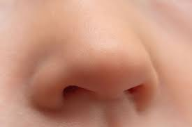

नाक

नाक नाक अधिकांश जीव जंतुओं के शरीर का आवश्यक अंग हैं। इस लेख में मानव शरीर से संबंधित उल्लेख है। गन्ध ज्ञान के लिए नासिका के अन्दर करोटि के घ्राणकोशों में बन्द दो लम्बी नासा गुहाएँ पाई जाती हैं। ये नासा पट्टी द्वारा दो भागों में विभक्त रहती हैं। प्रत्येक नासा गुहा तीन भागों में बँटी रहती है-
- प्रकोष्ठ
- श्वाँसमार्ग
- घ्राण भाग
घ्राण भाग में श्लेष्मिका कला पाई जाती है। जिसे घ्राण उपकला या श्नीडेरियल कला कहते हैं।
गन्ध का ज्ञान होना
श्वास एवं घ्राण भागों की श्लेष्मिका में श्लेष्मिका कला के नीचे संयोजी ऊतक का स्तर होता है। इसे आधार पटल कहते हैं। घ्राण भाग में यह मोटा होता है और इसमें शाखान्वित बोमेन की ग्रन्थियाँ होती हैं। इनसे स्रावित जल सदृश श्लेष्म वायु के साथ में आए गन्ध कणों को अपने में घोल लेता है और तभी घ्राण कोशिकाएँग्रन्ध से प्रभावित होती हैं। इसके बाद ये घुले हुए गन्ध युक्त कण संवेदी तन्त्रिकाओं के संवेदी रोमों के सम्पर्क में आते हैं। संवेदी रोम गन्ध की इस संवेदना (या उद्दीपन) को ग्रहण करके घ्राण तन्त्रिका द्वारा मस्तिष्क को पहुँचाते हैं, जिससे हमें गन्ध का ज्ञान हो जाता है।